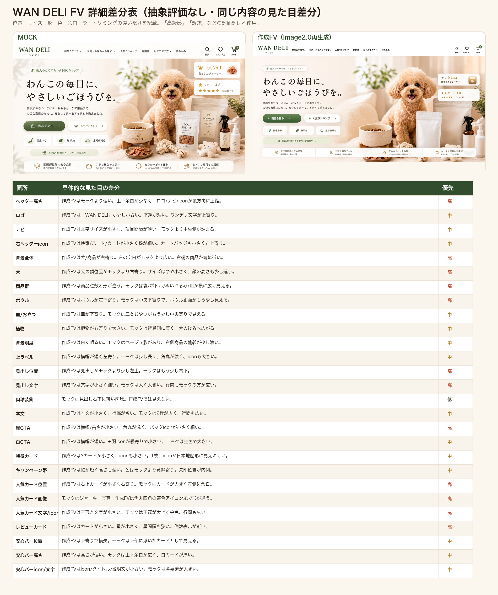
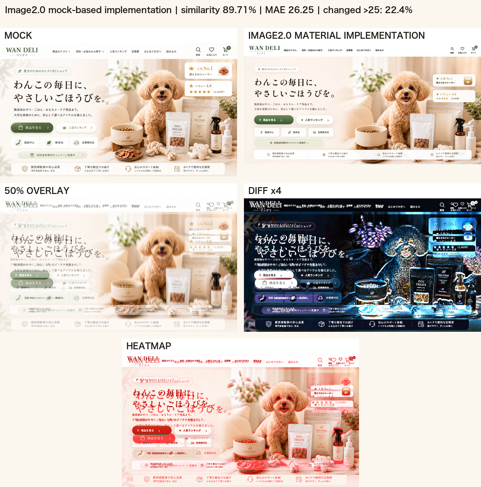
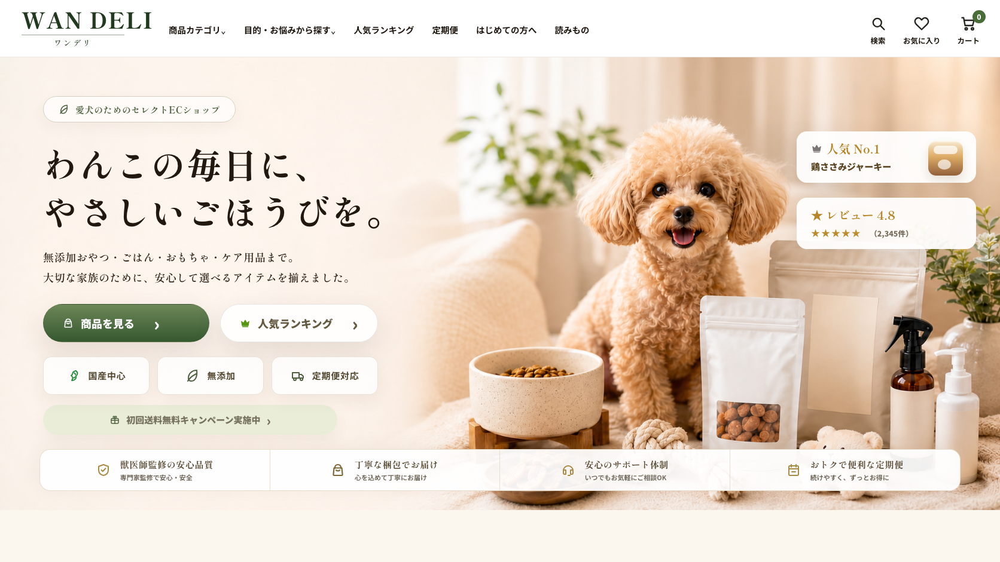
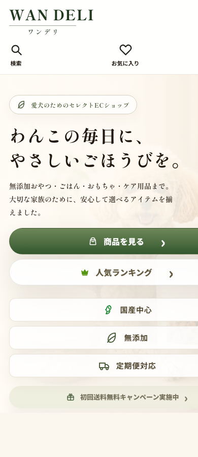

モック切り出しではなく、モックを参照してImage2.0で生成した再利用可能なFV背景素材を使用しています。
95%ゲートは未通過です。現在 89.71%。致命NGはありませんが、最終版ではなく95%前の確認版です。
プレビューへ戻る / サマリーJSON / 改善結果Markdown




致命NG: - 文字被りなし - 背景UI/文字残像なし - 大きなレイアウト崩壊なし 未達理由: - FVの犬・商品位置がモックとまだズレている - 右上カードの位置/サイズ/商品画像感が違う - ヘッダー、CTA、バッジの余白/密度が微差あり - 全体の色味がモックより少し白い 次はこのImage2.0素材方針のまま、ヘッダー→FV→CTA→バッジ→カード→安心バーの順に95%ゲートを通して進めます。